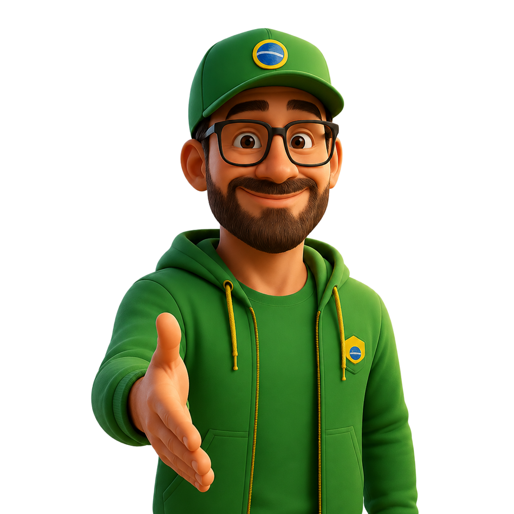
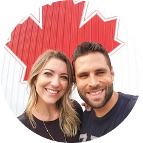
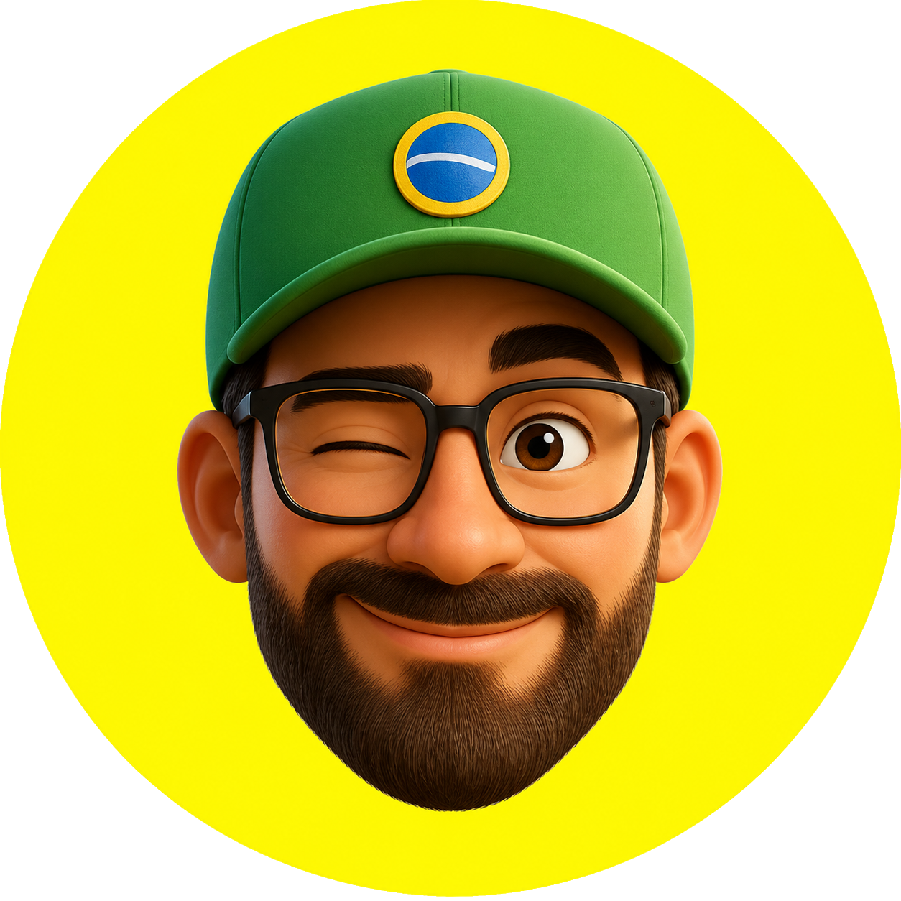

Pergunte no WhatsApp
Pergunte no WhatsApp
Brasileiros no exterior merecem respostas de quem entende.
Pergunte ao Zeca e encontre serviços, profissionais, benefícios e recomendações confiáveis onde você estiver.
O que o Zeca pode fazer por você?
Em cada situação, o Zeca atua de forma especializada para encontrar respostas, validar credenciais e facilitar sua vida no exterior.

Encontrar um profissional
O Zeca localiza contadores, advogados, dentistas, corretores e médicos que atendem em português e possuem registro válido no país.
Perguntar sobre profissionais →
Descobrir um serviço
Encontre empresas recomendadas pela comunidade brasileira com atendimento acolhedor, orçamento justo e histórico comprovado de entrega.
Buscar serviços recomendados →Economizar no dia a dia
Acesse o Clube de Vantagens do Zeca com cupons exclusivos negociados diretamente com empresas e embaixadores parceiros.
Ver benefícios disponíveis →
Entender sua cidade
Orientações práticas sobre bairros, comércios locais, serviços públicos e a rotina do país de destino, com o apoio de quem já reside lá.
Explorar com o Zeca →Como o Zeca encontra o que você precisa
Mais do que apenas um assistente, o Zeca combina inteligência contextual e um ecossistema com curadoria de pessoas reais.
Você pergunta
Envie uma mensagem pelo WhatsApp como se estivesse conversando com um amigo da sua cidade. Sem formulários longos ou termos técnicos.
Zeca entende o contexto
Ele interpreta seu país, cidade, urgência e as particularidades da rotina de quem vive ou está chegando ao exterior.
Zeca procura boas opções
O Zeca vasculha o ecossistema: parceiros verificados, cupons ativos do Clube e recomendações chanceladas por embaixadores locais.
Você escolhe com confiança
Você recebe as melhores opções organizadas com contato direto, benefícios claros e reputação na comunidade para tomar sua decisão.
Por que buscar no Zeca em vez de um buscador comum?
Buscadores comuns entregam links patrocinados sem garantia de idioma, contexto ou idoneidade. O Zeca conecta você a uma rede viva feita por e para brasileiros.
Empresas e parceiros credenciados
Negócios que realmente conhecem as necessidades do público brasileiro e atuam com seriedade no exterior.
Benefícios e cupons exclusivos
Condições especiais que diminuem o custo de vida lá fora, aplicados diretamente nas empresas participantes.
Indicações da comunidade
Avaliações de quem já usou, testou e aprovou os serviços na prática.
Embaixadores em campo
Criadores de conteúdo locais que trazem referências autênticas de cada cidade onde vivem.
Contexto sob medida para imigrantes
Respostas orientadas às dores reais de documentação, moradia, adaptação cultural e trabalho.

Pessoas reais que a comunidade já confia
Nossos embaixadores são criadores de conteúdo que residem no exterior, experimentam os serviços e ajudam o Zeca a manter recomendações atualizadas.



Dois caminhos para participar
Queremos construir a rede mais útil e relevante de apoio mútuo para a comunidade brasileira no exterior.
Tenho uma empresa
Seja encontrado por brasileiros que precisam dos seus serviços no momento em que eles pedem uma recomendação no WhatsApp.

Sou criador de conteúdo
Transforme sua influência em recomendações e benefícios para sua comunidade, gerando novas oportunidades para o seu canal.
Não sabe por onde começar?
Conte ao Zeca o que você precisa. Ele analisa seu momento e traz as recomendações certas para você viver com mais tranquilidade fora do país.